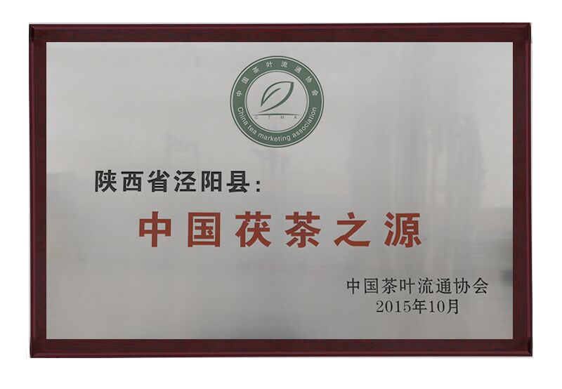

千年茶史，源远流长
茯茶作为中国六大茶类之一的黑茶代表，有着悠久的历史。从唐代起源，历经宋、元、明、清的发展，茯茶见证了中国茶文化的辉煌，也是古代茶马古道上的重要贸易品。
茯茶发展历程
茯茶起源
茯茶最早可追溯至唐代，当时为解决运输过程中茶叶保存问题，采用蒸压紧缩成型的方式制作紧压茶。唐代陆羽《茶经》中记载："蒸青，捣末，以型合印之，然后火炙，从火干之。"描述了早期茯茶的雏形。
茶饼兴盛

宋代是中国茶文化的鼎盛时期，团茶、饼茶广为流行。北宋《大观茶论》记载了当时茶叶紧压成型的多种方法，这一时期的紧压茶为后世茯茶的发展奠定了基础。
茯茶定型与茶马古道

明清时期，随着茶马贸易的兴盛，茯茶生产工艺逐渐成熟。清代陕西、湖北等地专门设立"官茶局"，生产供应边销茶。这一时期茯茶已形成了完整的制作工艺和品质特色，成为边疆少数民族生活中不可或缺的饮品。
科学研究与产业复兴
20世纪50年代起，对茯茶的科学研究逐步展开，尤其是对"金花"菌的研究取得了重大突破。21世纪以来，茯茶产业迎来复兴，多地茯茶获得国家地理标志保护产品认证，陕西省泾阳县取得了中国茯茶之源的荣誉，传统工艺与现代科技相结合，茯茶走向国际市场。
茶马古道：茯茶的贸易之路
茶马古道是中国西南地区连接中原与西藏、南亚等地的古代商贸通道，也是茯茶流通的主要路线。沿着这条古道，茯茶成为了连接不同民族、不同文化的纽带。
陕西安康
传统茯茶主产区，工艺精湛
康定
重要茶马互市贸易中心
拉萨
茯茶主要消费地，形成独特饮茶文化
古代文献中的茯茶
历代文献中对茯茶有着丰富的记载，从这些珍贵史料中，我们可以窥见茯茶发展的历史轨迹。
《茶经》记载
"蒸青，捣末，以型合印之，然后火炙，从火干之。"
唐代陆羽《茶经》中描述了早期压茶的制作方法，为后世茯茶工艺奠定了基础。
《华阳通志》记载
"边销之茶，蒸而压之成砖，其色黯黑，味甘醇，耐久藏，边人重之。"
清代文献对边销茶（即茯茶）的特点有详细描述，指出其色黑味醇、耐久藏的特性。
唐代茶叶文献摘录

文献译文
唐代陆羽《茶经》七之事中记载："蒸青，捣末，以型合印之，然后火炙，从火干之。"描述了当时茶叶经蒸制后捣碎成末，然后用模具压型，最后用火烘干的过程，这与后世茯茶的基本工艺流程相似。